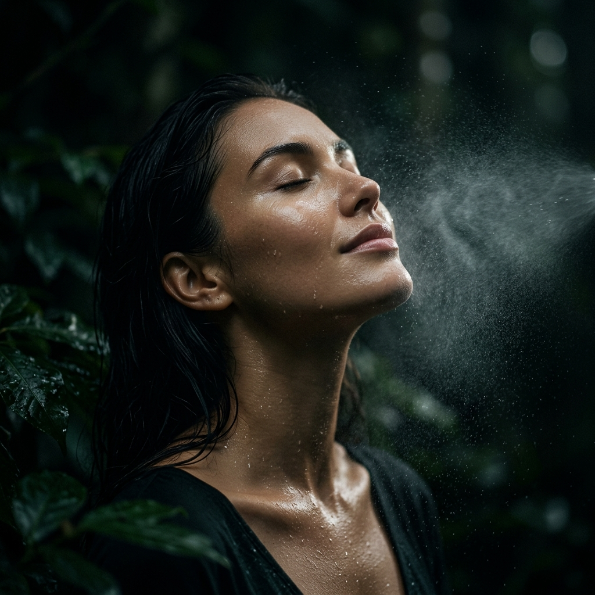
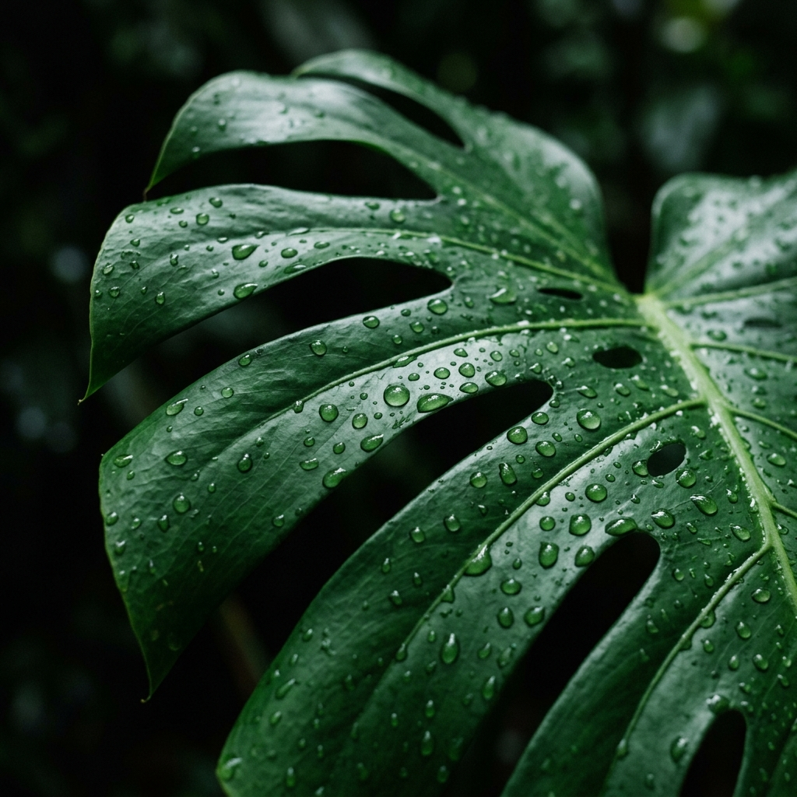

El tónico natural para todo lo que vive. Recupera la luminosidad de tu piel, el brillo de tu cabello y la vitalidad de tus plantas. The natural toner for everything alive. Recover your skin's radiance, your hair's shine, and your plants' vitality.
No es solo una sensación; es ciencia. El Ministerio de Salud de Japón ha certificado oficialmente el agua de pH 6.0 como astringente, reconociendo su capacidad única para tonificar la piel de forma natural y segura. It's not just a feeling; it's science. The Japanese Ministry of Health has officially certified pH 6.0 water as an astringent, recognizing its unique ability to tone the skin naturally and safely.
Desde una perspectiva económica y de salud, sustituir los tonificadores comerciales —cargados de alcohol y químicos— por agua fresca tratada físicamente en el momento, supone un ahorro inteligente y una liberación para tu organismo. From an economic and health perspective, replacing commercial toners—loaded with alcohol and chemicals—with fresh, physically treated water, represents a smart saving and a liberation for your body.
Usa un pulverizador fino para hidratarte durante el día, especialmente en ambientes con aire acondicionado o tras la limpieza facial. Use a fine mister to hydrate throughout the day, especially in air-conditioned environments or after facial cleansing.
Descubre cómo este agua de "astringencia suave" revoluciona tu cuidado personal y del hogar.
Úsala tras el champú para sellar la cutícula. Aporta un brillo natural increíble y reduce los enredos sin químicos. Use it after shampooing to seal the cuticle. It adds incredible natural shine and reduces tangles without chemicals.
Cepilla a tu perro o gato con un poco de pH 6. Su pelaje lucirá mucho más suave y brillante, como recién salido de la peluquería. Brush your dog or cat with some pH 6. Their coat will look much softer and shinier, like they just left the groomer.
Ideal para limpiar espejos y cristales. Al no dejar residuos minerales, el acabado es un brillo puro sin vetas. Ideal for cleaning mirrors and glass. Since it leaves no mineral residue, the finish is a pure streak-free shine.
Cuece huevos con pH 6 para que se pelen fácilmente. Úsala para lavar pasta y que quede "al dente" con un brillo apetitoso. Boil eggs with pH 6 so they peel easily. Use it to wash pasta for an "al dente" finish and an appetizing shine.

La gran mayoría de las plantas ornamentales y flores prosperan en un entorno ligeramente ácido. El pH 6.0 es el agua óptima que simula la lluvia suave y nutrida, permitiendo que tus plantas respiren mejor y luzcan un verde más intenso. The vast majority of ornamental plants and flowers thrive in a slightly acidic environment. pH 6.0 is the optimal water that simulates soft, nutrient-rich rain, allowing your plants to breathe better and look a more intense green.
Dos testimonios visuales que demuestran cómo el agua adecuada puede revivir y potenciar la vida de tus plantas y cultivos. Two visual testimonials showing how the right water can revive and enhance the life of your plants and crops.
Observa el cambio de vitalidad en cuestión de horas tras el riego con pH 6.0. Witness the shift in vitality within hours after watering with pH 6.0.
Cómo el agua Kangen influye en el desarrollo estructural y la intensidad cromática. How Kangen water influences structural development and color intensity.
"Porque la belleza no es algo que se compra, es algo que se cultiva con el equilibrio adecuado."
Saber más sobre Kangen